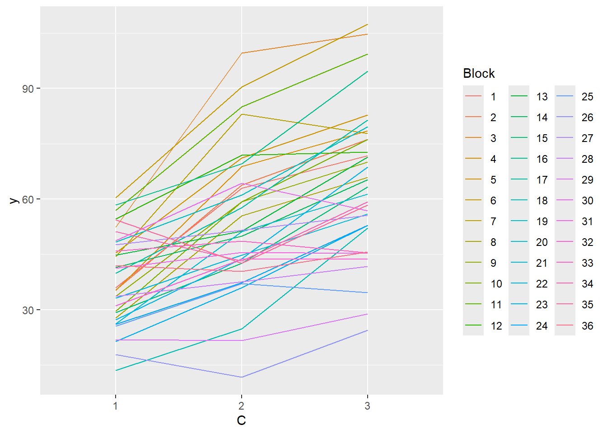
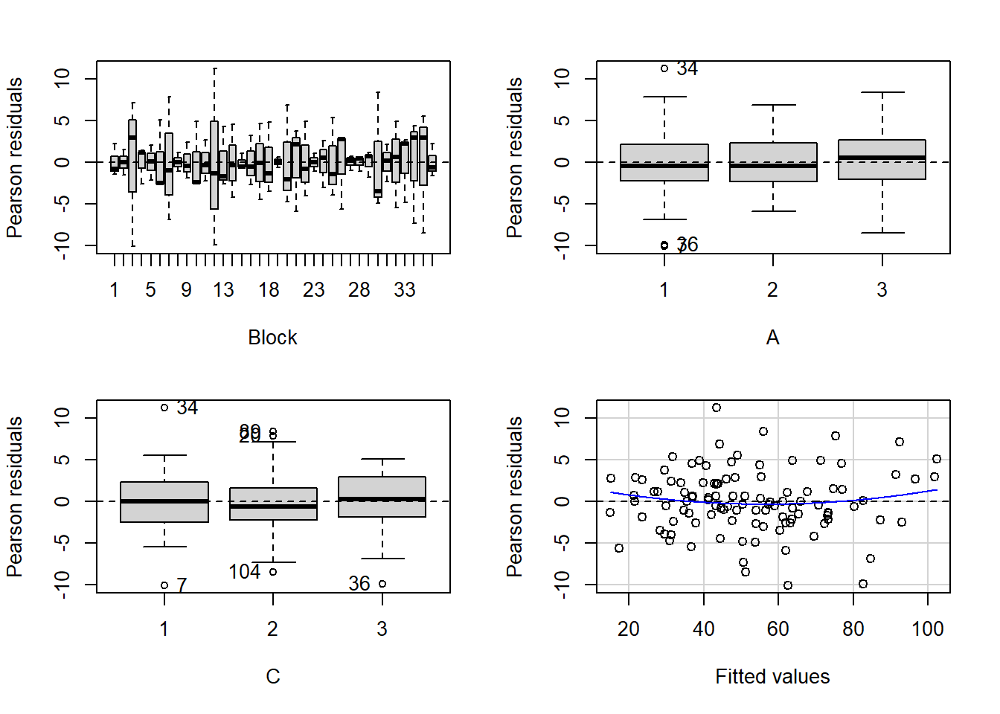

This tutorial will focus on the use of Bayesian estimation to fit simple linear regression models …
Keywords
Software, Statistics, Stan
This tutorial will focus on the use of Bayesian estimation to fit simple linear regression models. BUGS (Bayesian inference Using Gibbs Sampling) is an algorithm and supporting language (resembling R) dedicated to performing the Gibbs sampling implementation of Markov Chain Monte Carlo (MCMC) method. Dialects of the BUGS language are implemented within three main projects:
OpenBUGS - written in component pascal.
JAGS - (Just Another Gibbs Sampler) - written in C++.
Stan - a dedicated Bayesian modelling framework written in C++ and implementing Hamiltonian MCMC samplers.
Whilst the above programs can be used stand-alone, they do offer the rich data pre-processing and graphical capabilities of R, and thus, they are best accessed from within R itself. As such there are multiple packages devoted to interfacing with the various software implementations:
R2OpenBUGS - interfaces with OpenBUGS
R2jags - interfaces with JAGS
rstan - interfaces with Stan
This tutorial will demonstrate how to fit models in Stan (Gelman, Lee, and Guo (2015)) using the package rstan (Stan Development Team (2018)) as interface, which also requires to load some other packages.
Overview
Introduction
Split-plot designs (plots refer to agricultural field plots for which these designs were originally devised) extend unreplicated factorial (randomised complete block and simple repeated measures) designs by incorporating an additional factor whose levels are applied to entire blocks. Similarly, complex repeated measures designs are repeated measures designs in which there are different types of subjects. Consider the example of a randomised complete block. Blocks of four treatments (representing leaf packs subject to different aquatic taxa) were secured in numerous locations throughout a potentially heterogeneous stream. If some of those blocks had been placed in riffles, some in runs and some in pool habitats of the stream, the design becomes a split-plot design incorporating a between block factor (stream region: runs, riffles or pools) and a within block factor (leaf pack exposure type: microbial, macro invertebrate or vertebrate). Furthermore, the design would enable us to investigate whether the roles that different organism scales play on the breakdown of leaf material in stream are consistent across each of the major regions of a stream (interaction between region and exposure type). Alternatively (or in addition), shading could be artificially applied to half of the blocks, thereby introducing a between block effect (whether the block is shaded or not). Extending the repeated measures examples from Tutorial 9.3a, there might have been different populations (such as different species or histories) of rats or sharks. Any single subject (such as an individual shark or rat) can only be of one of the populations types and thus this additional factor represents a between subject effect.
Linear models
The linear models for three and four factor partly nested designs are:
where \(\mu\) is the overall mean, \(\beta\) is the effect of the Blocking Factor B and \(\epsilon\) is the random unexplained or residual component.
Assumptions
As partly nested designs share elements in common with each of nested, factorial and unreplicated factorial designs, they also share similar assumptions and implications to these other designs. Specifically, hypothesis tests assume that:
the appropriate residuals are normally distributed. Boxplots using the appropriate scale of replication (reflecting the appropriate residuals/F-ratio denominator (see Tables above) be used to explore normality. Scale transformations are often useful.
the appropriate residuals are equally varied. Boxplots and plots of means against variance (using the appropriate scale of replication) should be used to explore the spread of values. Residual plots should reveal no patterns. Scale transformations are often useful.
the appropriate residuals are independent of one another. Critically, experimental units within blocks/subjects should be adequately spaced temporally and spatially to restrict contamination or carryover effects. Non-independence resulting from the hierarchical design should be accounted for.
that the variance/covariance matrix displays sphericity (strickly, the variance-covariance matrix must display a very specific pattern of sphericity in which both variances and covariances are equal (compound symmetry), however, an F-ratio will still reliably follow an F distribution provided basic sphericity holds). This assumption is likely to be met only if the treatment levels within each block can be randomly ordered. This assumption can be managed by either adjusting the sensitivity of the affected F-ratios or employing linear mixed effects modelling to the design.
there are no block by within block interactions. Such interactions render non-significant within block effects difficult to interpret unless we assume that there are no block by within block interactions, non-significant within block effects could be due to either an absence of a treatment effect, or as a result of opposing effects within different blocks. As these block by within block interactions are unreplicated, they can neither be formally tested nor is it possible to perform main effects tests to diagnose non-significant within block effects.
Split-plot design
Data generation
Imagine we has designed an experiment in which we intend to measure a response (\(y\)) to one of treatments (three levels; “a1”, “a2” and “a3”). Unfortunately, the system that we intend to sample is spatially heterogeneous and thus will add a great deal of noise to the data that will make it difficult to detect a signal (impact of treatment). Thus in an attempt to constrain this variability you decide to apply a design (RCB) in which each of the treatments within each of \(35\) blocks dispersed randomly throughout the landscape. As this section is mainly about the generation of artificial data (and not specifically about what to do with the data), understanding the actual details are optional and can be safely skipped.
library(plyr)set.seed(123)nA <-3nC <-3nBlock <-36sigma <-5sigma.block <-12n <- nBlock*nCBlock <-gl(nBlock, k=1)C <-gl(nC,k=1)## Specify the cell meansAC.means<-(rbind(c(40,70,80),c(35,50,70),c(35,40,45)))## Convert these to effectsX <-model.matrix(~A*C,data=expand.grid(A=gl(3,k=1),C=gl(3,k=1)))AC <-as.vector(AC.means)AC.effects <-solve(X,AC)A <-gl(nA,nBlock,n)dt <-expand.grid(C=C,Block=Block)dt <-data.frame(dt,A)Xmat <-cbind(model.matrix(~-1+Block, data=dt),model.matrix(~A*C, data=dt))block.effects <-rnorm(n = nBlock, mean =0 , sd = sigma.block)all.effects <-c(block.effects, AC.effects)lin.pred <- Xmat %*% all.effects## the quadrat observations (within sites) are drawn from## normal distributions with means according to the site means## and standard deviations of 5y <-rnorm(n,lin.pred,sigma)data.splt <-data.frame(y=y, A=A,dt)head(data.splt) #print out the first six rows of the data set
NA y A C Block A.1
NA 1 36.04388 1 1 1 1
NA 2 62.96473 1 2 1 1
NA 3 71.74448 1 3 1 1
NA 4 35.33552 1 1 2 1
NA 5 63.76434 1 2 2 1
NA 6 76.19828 1 3 2 1
there is no evidence that the response variable is consistently non-normal across all populations - each boxplot is approximately symmetrical.
there is no evidence that variance (as estimated by the height of the boxplots) differs between the five populations. More importantly, there is no evidence of a relationship between mean and variance - the height of boxplots does not increase with increasing position along the y-axis. Hence it there is no evidence of non-homogeneity.
Obvious violations could be addressed either by:
transform the scale of the response variables (to address normality, etc). Note transformations should be applied to the entire response variable (not just those populations that are skewed).
#OR with ggplotlibrary(ggplot2)ggplot(data.splt, aes(y=y, x=C, group=Block,color=Block)) +geom_line() +guides(color=guide_legend(ncol=3))

residualPlots(lm(y~Block+A*C, data.splt))

NA Test stat Pr(>|Test stat|)
NA Block
NA A
NA C
NA Tukey test 1.4518 0.1466
# the Tukey's non-additivity test by itself can be obtained via an internal function# within the car packagecar:::tukeyNonaddTest(lm(y~Block+A*C, data.splt))
NA Test Pvalue
NA 1.4517644 0.1465671
Conclusions:
there is no visual or inferential evidence of any major interactions between Block and the within-Block effect (C). Any trends appear to be reasonably consistent between Blocks.
Example - split-plot
In an attempt to understand the effects on marine animals of short-term exposure to toxic substances, such as might occur following a spill, or a major increase in storm water flows, a it was decided to examine the toxicant in question, Copper, as part of a field experiment in Honk Kong. The experiment consisted of small sources of Cu (small, hemispherical plaster blocks, impregnated with copper), which released the metal into sea water over \(4\) or \(5\) days. The organism whose response to Cu was being measured was a small, polychaete worm, Hydroides, that attaches to hard surfaces in the sea, and is one of the first species to colonize any surface that is submerged. The biological questions focused on whether the timing of exposure to Cu affects the overall abundance of these worms. The time period of interest was the first or second week after a surface being available.
The experimental setup consisted of sheets of black perspex (settlement plates), which provided good surfaces for these worms. Each plate had a plaster block bolted to its centre, and the dissolving block would create a gradient of [Cu] across the plate. Over the two weeks of the experiment, a given plate would have pl ain plaster blocks (Control) or a block containing copper in the first week, followed by a plain block, or a plain block in the first week, followed by a dose of copper in the second week. After two weeks in the water, plates were removed and counted back in the laboratory. Without a clear idea of how sensitive these worms are to copper, an effect of the treatments might show up as an overall difference in the density of worms across a plate, or it could show up as a gradient in abundance across the plate, with a different gradient in different treatments. Therefore, on each plate, the density of worms was recorded at each of four distances from the center of the plate. Let’s have a look at the dataset
NA COPPER PLATE DIST WORMS
NA 1 control 200 4 11.50
NA 2 control 200 3 13.00
NA 3 control 200 2 13.50
NA 4 control 200 1 12.00
NA 5 control 39 4 17.75
NA 6 control 39 3 13.75
Variables’ description:
Copper. Categorical listing of the copper treatment (control = no copper applied, week 2 = copper treatment applied in second week and week 1= copper treatment applied in first week) applied to whole plates. Factor A (between plot factor).
Plate. Substrate provided for polychaete worm colonization on which copper treatment applied. These are the plots (Factor B). Numbers in this column represent numerical labels given to each plate.
Dist. Categorical listing for the four concentric distances from the center of the plate (source of copper treatment) with 1 being the closest and 4 the furthest. Factor C (within plot factor)
Worms. Density of worms measured. Response variable.
The Plates are the “random” groups. Within each Plate, all levels of the Distance factor occur (this is a within group factor). Each Plate can only be of one of the three levels of the Copper treatment. This is therefore a within group (nested) factor. Traditionally, this mixture of nested and randomised block design would be called a partly nested or split-plot design. In Bayesian (multilevel modeling) terms, this is a multi-level model with one hierarchical level the Plates means and another representing the Copper treatment means (based on the Plate means). Exploratory data analysis has indicated that the response variable could be normalised via a forth-root transformation.
Model fitting
We will only explore the matrix parameterisation (random intercepts) of the model, where
\[
\text{number of lesions}_i = \beta \text{Site}_{j(i)} + \epsilon_{i},
\]
where \(\epsilon_i∼ N(0,\sigma^2)\) and we treat Distance as a factor.
rstanString="data{ int n; int nZ; int nX; vector [n] y; matrix [n,nX] X; matrix [n,nZ] Z; vector [nX] a0; matrix [nX,nX] A0;}parameters{ vector [nX] beta; real<lower=0> sigma; vector [nZ] gamma; real<lower=0> sigma_Z;}transformed parameters { vector [n] mu; mu = X*beta + Z*gamma; } model{ // Priors beta ~ multi_normal(a0,A0); gamma ~ normal( 0 , sigma_Z ); sigma_Z ~ cauchy(0,25); sigma ~ cauchy(0,25); y ~ normal( mu , sigma );}generated quantities { vector [n] y_err; real<lower=0> sd_Resid; y_err = y - mu; sd_Resid = sd(y_err);}"## write the model to a text filewriteLines(rstanString, con ="matrixModel.stan")#sort the data set so that the copper treatments are in a more logical orderlibrary(dplyr)copper$DIST <-factor(copper$DIST)copper$PLATE <-factor(copper$PLATE)copper.sort <-arrange(copper,COPPER,PLATE,DIST)Xmat <-model.matrix(~COPPER*DIST, data=copper.sort)Zmat <-model.matrix(~-1+PLATE, data=copper.sort)copper.list <-list(y=copper.sort$WORMS,X=Xmat, nX=ncol(Xmat),Z=Zmat, nZ=ncol(Zmat),n=nrow(copper.sort),a0=rep(0,ncol(Xmat)), A0=diag(100000,ncol(Xmat)) )params <-c("beta","gamma","sigma","sigma_Z")burnInSteps =500nChains =2numSavedSteps =5000thinSteps =1nIter =ceiling((numSavedSteps * thinSteps)/nChains)library(rstan)library(coda)copper.rstan.a <-stan(data = copper.list, file ="matrixModel.stan", chains = nChains, pars = params, iter = nIter, warmup = burnInSteps, thin = thinSteps)
NA
NA SAMPLING FOR MODEL 'anon_model' NOW (CHAIN 1).
NA Chain 1:
NA Chain 1: Gradient evaluation took 3e-05 seconds
NA Chain 1: 1000 transitions using 10 leapfrog steps per transition would take 0.3 seconds.
NA Chain 1: Adjust your expectations accordingly!
NA Chain 1:
NA Chain 1:
NA Chain 1: Iteration: 1 / 2500 [ 0%] (Warmup)
NA Chain 1: Iteration: 250 / 2500 [ 10%] (Warmup)
NA Chain 1: Iteration: 500 / 2500 [ 20%] (Warmup)
NA Chain 1: Iteration: 501 / 2500 [ 20%] (Sampling)
NA Chain 1: Iteration: 750 / 2500 [ 30%] (Sampling)
NA Chain 1: Iteration: 1000 / 2500 [ 40%] (Sampling)
NA Chain 1: Iteration: 1250 / 2500 [ 50%] (Sampling)
NA Chain 1: Iteration: 1500 / 2500 [ 60%] (Sampling)
NA Chain 1: Iteration: 1750 / 2500 [ 70%] (Sampling)
NA Chain 1: Iteration: 2000 / 2500 [ 80%] (Sampling)
NA Chain 1: Iteration: 2250 / 2500 [ 90%] (Sampling)
NA Chain 1: Iteration: 2500 / 2500 [100%] (Sampling)
NA Chain 1:
NA Chain 1: Elapsed Time: 0.112 seconds (Warm-up)
NA Chain 1: 0.373 seconds (Sampling)
NA Chain 1: 0.485 seconds (Total)
NA Chain 1:
NA
NA SAMPLING FOR MODEL 'anon_model' NOW (CHAIN 2).
NA Chain 2:
NA Chain 2: Gradient evaluation took 1e-05 seconds
NA Chain 2: 1000 transitions using 10 leapfrog steps per transition would take 0.1 seconds.
NA Chain 2: Adjust your expectations accordingly!
NA Chain 2:
NA Chain 2:
NA Chain 2: Iteration: 1 / 2500 [ 0%] (Warmup)
NA Chain 2: Iteration: 250 / 2500 [ 10%] (Warmup)
NA Chain 2: Iteration: 500 / 2500 [ 20%] (Warmup)
NA Chain 2: Iteration: 501 / 2500 [ 20%] (Sampling)
NA Chain 2: Iteration: 750 / 2500 [ 30%] (Sampling)
NA Chain 2: Iteration: 1000 / 2500 [ 40%] (Sampling)
NA Chain 2: Iteration: 1250 / 2500 [ 50%] (Sampling)
NA Chain 2: Iteration: 1500 / 2500 [ 60%] (Sampling)
NA Chain 2: Iteration: 1750 / 2500 [ 70%] (Sampling)
NA Chain 2: Iteration: 2000 / 2500 [ 80%] (Sampling)
NA Chain 2: Iteration: 2250 / 2500 [ 90%] (Sampling)
NA Chain 2: Iteration: 2500 / 2500 [100%] (Sampling)
NA Chain 2:
NA Chain 2: Elapsed Time: 0.109 seconds (Warm-up)
NA Chain 2: 0.301 seconds (Sampling)
NA Chain 2: 0.41 seconds (Total)
NA Chain 2:
print(copper.rstan.a, par =c("beta","gamma","sigma","sigma_Z"))
NA Inference for Stan model: anon_model.
NA 2 chains, each with iter=2500; warmup=500; thin=1;
NA post-warmup draws per chain=2000, total post-warmup draws=4000.
NA
NA mean se_mean sd 2.5% 25% 50% 75% 97.5% n_eff Rhat
NA beta[1] 10.88 0.02 0.69 9.50 10.42 10.88 11.35 12.24 1187 1.00
NA beta[2] -3.65 0.03 0.98 -5.54 -4.30 -3.64 -2.99 -1.68 1440 1.00
NA beta[3] -10.62 0.03 0.99 -12.53 -11.30 -10.61 -9.95 -8.70 1235 1.00
NA beta[4] 1.11 0.02 0.89 -0.66 0.52 1.09 1.67 2.87 1462 1.00
NA beta[5] 1.54 0.02 0.87 -0.15 0.94 1.52 2.12 3.26 1487 1.00
NA beta[6] 2.67 0.03 0.90 0.90 2.07 2.66 3.26 4.46 1290 1.00
NA beta[7] 0.00 0.03 1.25 -2.49 -0.81 0.01 0.84 2.47 1834 1.00
NA beta[8] 0.09 0.03 1.29 -2.51 -0.73 0.13 0.92 2.56 1509 1.00
NA beta[9] -0.29 0.03 1.22 -2.76 -1.08 -0.30 0.55 2.08 1764 1.00
NA beta[10] 2.21 0.03 1.28 -0.30 1.40 2.21 3.05 4.74 1651 1.00
NA beta[11] 0.08 0.03 1.27 -2.44 -0.78 0.06 0.95 2.56 1615 1.00
NA beta[12] 4.92 0.03 1.30 2.34 4.07 4.90 5.81 7.43 1501 1.00
NA gamma[1] 0.17 0.01 0.51 -0.75 -0.12 0.12 0.44 1.28 2056 1.00
NA gamma[2] -0.14 0.01 0.50 -1.25 -0.41 -0.09 0.14 0.82 2853 1.00
NA gamma[3] 0.30 0.02 0.52 -0.57 -0.02 0.21 0.58 1.55 1045 1.00
NA gamma[4] -0.42 0.02 0.55 -1.68 -0.75 -0.32 -0.03 0.46 844 1.00
NA gamma[5] -0.35 0.02 0.53 -1.56 -0.66 -0.27 0.01 0.53 1132 1.00
NA gamma[6] 0.76 0.04 0.67 -0.17 0.21 0.66 1.18 2.27 308 1.01
NA gamma[7] -0.16 0.01 0.51 -1.29 -0.43 -0.12 0.12 0.82 2640 1.00
NA gamma[8] -0.47 0.02 0.58 -1.80 -0.82 -0.36 -0.05 0.46 893 1.00
NA gamma[9] 0.12 0.01 0.48 -0.84 -0.14 0.07 0.38 1.14 3089 1.00
NA gamma[10] -0.08 0.01 0.50 -1.14 -0.35 -0.06 0.19 0.87 3835 1.00
NA gamma[11] -0.13 0.01 0.48 -1.19 -0.38 -0.09 0.13 0.81 3242 1.00
NA gamma[12] 0.20 0.01 0.50 -0.71 -0.08 0.14 0.46 1.33 1786 1.00
NA gamma[13] 0.15 0.01 0.50 -0.79 -0.14 0.10 0.42 1.26 2182 1.00
NA gamma[14] 0.10 0.01 0.48 -0.84 -0.16 0.06 0.35 1.11 3417 1.00
NA gamma[15] -0.08 0.01 0.49 -1.12 -0.35 -0.04 0.18 0.89 2643 1.00
NA sigma 1.40 0.00 0.17 1.12 1.28 1.39 1.51 1.77 1788 1.00
NA sigma_Z 0.59 0.02 0.33 0.08 0.34 0.56 0.78 1.33 196 1.01
NA
NA Samples were drawn using NUTS(diag_e) at Mon Jul 22 13:49:26 2024.
NA For each parameter, n_eff is a crude measure of effective sample size,
NA and Rhat is the potential scale reduction factor on split chains (at
NA convergence, Rhat=1).
MCMC diagnostics
Before fully exploring the parameters, it is prudent to examine the convergence and mixing diagnostics. Chose either any of the parameterizations (they should yield much the same).
NA [[1]]
NA
NA Quantile (q) = 0.025
NA Accuracy (r) = +/- 0.005
NA Probability (s) = 0.95
NA
NA You need a sample size of at least 3746 with these values of q, r and s
NA
NA [[2]]
NA
NA Quantile (q) = 0.025
NA Accuracy (r) = +/- 0.005
NA Probability (s) = 0.95
NA
NA You need a sample size of at least 3746 with these values of q, r and s
autocorr.diag(mcmc)
NA beta[1] beta[2] beta[3] beta[4] beta[5]
NA Lag 0 1.00000000 1.000000000 1.000000000 1.000000000 1.00000000
NA Lag 1 0.41243540 0.339550873 0.400163967 0.277128766 0.26820878
NA Lag 5 0.07102840 0.030234987 0.076252882 0.046470932 0.04059323
NA Lag 10 0.01025273 0.011853811 -0.009715283 0.003697684 0.02096189
NA Lag 50 -0.01935325 -0.008677298 -0.020469817 -0.021681255 -0.02427059
NA beta[6] beta[7] beta[8] beta[9] beta[10]
NA Lag 0 1.000000000 1.000000000 1.000000000 1.00000000 1.00000000
NA Lag 1 0.304121166 0.171032611 0.270680721 0.19255934 0.22372525
NA Lag 5 0.062616531 0.027598718 0.049050651 0.04072616 0.04169052
NA Lag 10 0.008920267 0.008779169 -0.009819737 0.01071783 0.02903601
NA Lag 50 0.007623398 -0.005112117 -0.010928777 -0.01614899 -0.01044049
NA beta[11] beta[12] gamma[1] gamma[2] gamma[3]
NA Lag 0 1.000000000 1.000000000 1.000000000 1.0000000000 1.000000000
NA Lag 1 0.233241517 0.238614222 0.043510725 0.0009244863 0.072822630
NA Lag 5 0.034862905 0.042742374 -0.001918630 0.0241914956 0.054090901
NA Lag 10 -0.003071861 -0.001409673 0.035940499 0.0307487918 0.043888093
NA Lag 50 0.010507726 -0.020517084 0.009830037 -0.0160805051 -0.008810545
NA gamma[4] gamma[5] gamma[6] gamma[7] gamma[8] gamma[9]
NA Lag 0 1.000000000 1.00000000 1.00000000 1.00000000 1.00000000 1.000000000
NA Lag 1 0.087957279 0.10474543 0.26272701 0.06220393 0.11883475 -0.026530632
NA Lag 5 0.100739861 0.09079565 0.20002903 0.02354125 0.09171889 0.003297873
NA Lag 10 0.053674794 0.03524323 0.11875428 0.02491723 0.08026158 -0.005151384
NA Lag 50 -0.005883612 0.01517194 0.02817319 -0.01743733 0.02240176 0.002685263
NA gamma[10] gamma[11] gamma[12] gamma[13] gamma[14]
NA Lag 0 1.000000000 1.000000000 1.0000000000 1.000000000 1.0000000000
NA Lag 1 -0.083471258 -0.021778094 0.0026519129 0.035619521 -0.0068898873
NA Lag 5 -0.025783628 -0.001113343 0.0358077449 0.003617877 -0.0356908223
NA Lag 10 0.007973235 0.007520300 0.0397866864 0.016260498 -0.0008975898
NA Lag 50 -0.001931942 0.006841088 0.0006658607 0.003163153 -0.0062199336
NA gamma[15] sigma sigma_Z lp__
NA Lag 0 1.00000000 1.000000000 1.0000000 1.00000000
NA Lag 1 0.02463886 0.076223538 0.6566621 0.84167987
NA Lag 5 -0.01506360 0.046194982 0.3651672 0.56805415
NA Lag 10 0.02910642 0.020878887 0.2362394 0.41770858
NA Lag 50 -0.03103926 -0.009786308 0.0630208 0.04551303
Parameter estimates
print(copper.rstan.a)
NA Inference for Stan model: anon_model.
NA 2 chains, each with iter=2500; warmup=500; thin=1;
NA post-warmup draws per chain=2000, total post-warmup draws=4000.
NA
NA mean se_mean sd 2.5% 25% 50% 75% 97.5% n_eff Rhat
NA beta[1] 10.88 0.02 0.69 9.50 10.42 10.88 11.35 12.24 1187 1.00
NA beta[2] -3.65 0.03 0.98 -5.54 -4.30 -3.64 -2.99 -1.68 1440 1.00
NA beta[3] -10.62 0.03 0.99 -12.53 -11.30 -10.61 -9.95 -8.70 1235 1.00
NA beta[4] 1.11 0.02 0.89 -0.66 0.52 1.09 1.67 2.87 1462 1.00
NA beta[5] 1.54 0.02 0.87 -0.15 0.94 1.52 2.12 3.26 1487 1.00
NA beta[6] 2.67 0.03 0.90 0.90 2.07 2.66 3.26 4.46 1290 1.00
NA beta[7] 0.00 0.03 1.25 -2.49 -0.81 0.01 0.84 2.47 1834 1.00
NA beta[8] 0.09 0.03 1.29 -2.51 -0.73 0.13 0.92 2.56 1509 1.00
NA beta[9] -0.29 0.03 1.22 -2.76 -1.08 -0.30 0.55 2.08 1764 1.00
NA beta[10] 2.21 0.03 1.28 -0.30 1.40 2.21 3.05 4.74 1651 1.00
NA beta[11] 0.08 0.03 1.27 -2.44 -0.78 0.06 0.95 2.56 1615 1.00
NA beta[12] 4.92 0.03 1.30 2.34 4.07 4.90 5.81 7.43 1501 1.00
NA gamma[1] 0.17 0.01 0.51 -0.75 -0.12 0.12 0.44 1.28 2056 1.00
NA gamma[2] -0.14 0.01 0.50 -1.25 -0.41 -0.09 0.14 0.82 2853 1.00
NA gamma[3] 0.30 0.02 0.52 -0.57 -0.02 0.21 0.58 1.55 1045 1.00
NA gamma[4] -0.42 0.02 0.55 -1.68 -0.75 -0.32 -0.03 0.46 844 1.00
NA gamma[5] -0.35 0.02 0.53 -1.56 -0.66 -0.27 0.01 0.53 1132 1.00
NA gamma[6] 0.76 0.04 0.67 -0.17 0.21 0.66 1.18 2.27 308 1.01
NA gamma[7] -0.16 0.01 0.51 -1.29 -0.43 -0.12 0.12 0.82 2640 1.00
NA gamma[8] -0.47 0.02 0.58 -1.80 -0.82 -0.36 -0.05 0.46 893 1.00
NA gamma[9] 0.12 0.01 0.48 -0.84 -0.14 0.07 0.38 1.14 3089 1.00
NA gamma[10] -0.08 0.01 0.50 -1.14 -0.35 -0.06 0.19 0.87 3835 1.00
NA gamma[11] -0.13 0.01 0.48 -1.19 -0.38 -0.09 0.13 0.81 3242 1.00
NA gamma[12] 0.20 0.01 0.50 -0.71 -0.08 0.14 0.46 1.33 1786 1.00
NA gamma[13] 0.15 0.01 0.50 -0.79 -0.14 0.10 0.42 1.26 2182 1.00
NA gamma[14] 0.10 0.01 0.48 -0.84 -0.16 0.06 0.35 1.11 3417 1.00
NA gamma[15] -0.08 0.01 0.49 -1.12 -0.35 -0.04 0.18 0.89 2643 1.00
NA sigma 1.40 0.00 0.17 1.12 1.28 1.39 1.51 1.77 1788 1.00
NA sigma_Z 0.59 0.02 0.33 0.08 0.34 0.56 0.78 1.33 196 1.01
NA lp__ -45.84 0.72 8.72 -60.26 -51.47 -47.10 -41.74 -23.59 146 1.01
NA
NA Samples were drawn using NUTS(diag_e) at Mon Jul 22 13:49:26 2024.
NA For each parameter, n_eff is a crude measure of effective sample size,
NA and Rhat is the potential scale reduction factor on split chains (at
NA convergence, Rhat=1).
References
Gelman, Andrew, Daniel Lee, and Jiqiang Guo. 2015. “Stan: A Probabilistic Programming Language for Bayesian Inference and Optimization.”Journal of Educational and Behavioral Statistics 40 (5): 530–43.
Stan Development Team. 2018. “RStan: The R Interface to Stan.”http://mc-stan.org/.
![]()